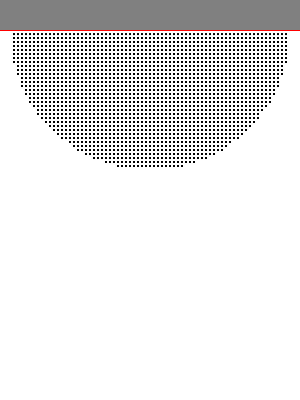
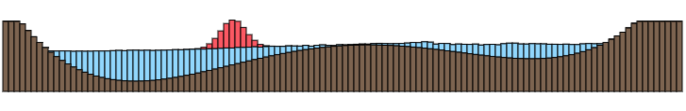
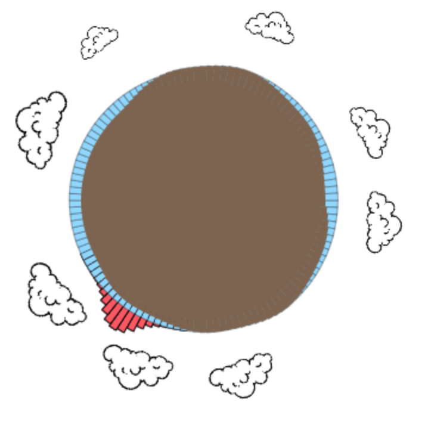

Basic-Simulation Examples
These two examples are simple demonstrations of Lagrangian-style simulations using a potential field for fluids (similar to a lennard jones potential) and springs for soft-body simulations.
Both simulations have controls in the top bar. The simulation is not really fast (its JS) but you can replay it at the normal speed. GIF generation might kill your browser.. be careful.
Fluid via microscopic-potential
A simple fluid that uses a slightly different potential than the standard lennard jones potential. There is a top layer of fixed particles to simulate the "stickyness".
Soft-Body via springs
A jelly box that can deform plastically (it restores its original form). The floor is also done with a simple spring. Usually you have to calculate the contact normal, but the floor is a simple plane and thus the contact normal is always upwards. (It takes approx. 1500 steps until you can see the box.)
Heighfield Water (on a sphere)
 An interactive heightfield water implementation on a sphere with bouncy clouds. Basics for implementing heightfield water are explained here in german.